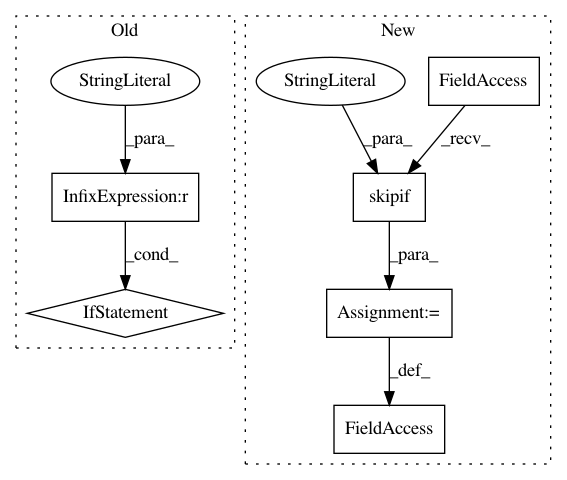

8f41e41eda6e8ea96403cae5798a5a89c8bb5605,tests/test_multiprocessing.py,,,#,11
Before Change
STEPS_PER_EPOCH = 100
STEPS = 100
WORKERS = 4 if K.backend() != "tensorflow" else 2
class DummySequence(Sequence):
def __getitem__(self, idx):
After Change
from keras.utils import Sequence
from keras import backend as K
pytestmark = pytest.mark.skipif(
six.PY2 and "TRAVIS_PYTHON_VERSION" in os.environ,
reason="Temporarily disabled until the use_multiprocessing problem is solved")
skip_generators = pytest.mark.skipif(K.backend() in {"tensorflow", "cntk"} and
"TRAVIS_PYTHON_VERSION" in os.environ,
reason="Generators do not work with `spawn`.")
In pattern: SUPERPATTERN
Frequency: 3
Non-data size: 6
Instances
Project Name: keras-team/keras
Commit Name: 8f41e41eda6e8ea96403cae5798a5a89c8bb5605
Time: 2018-12-20
Author: frederic.branchaud-charron@usherbrooke.ca
File Name: tests/test_multiprocessing.py
Class Name:
Method Name:
Project Name: keras-team/keras
Commit Name: caceebcbe9afd0d4ff51cdfb88c16fd7f34ff104
Time: 2019-08-25
Author: francois.chollet@gmail.com
File Name: tests/keras/losses_test.py
Class Name:
Method Name:
Project Name: scipy/scipy
Commit Name: cdf8808143dbcfaddbd00a99aa0d28cabb5ad7d7
Time: 2008-06-22
Author: cournape@gmail.com
File Name: scipy/weave/tests/test_wx_spec.py
Class Name:
Method Name: